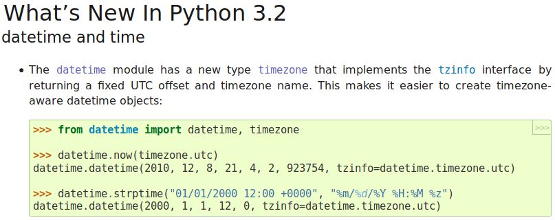
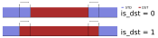
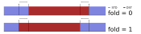
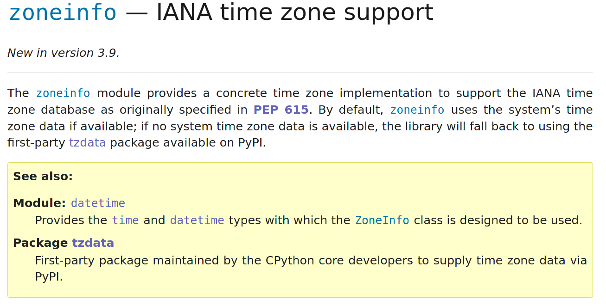
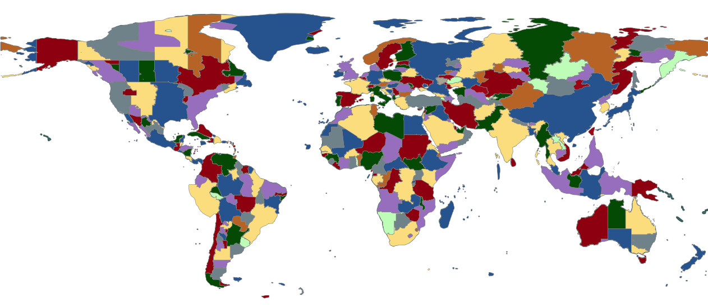
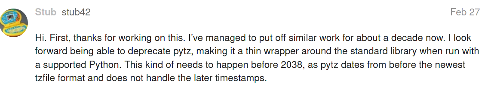

<!-- .slide: class="title-slide" --> <h1 class="title"><tt>zoneinfo</tt>: A stunning module of exceptional quality</h1> <div class="authors"> Paul Ganssle </div> <div> <div class="author-logos"> <img src="images/pganssle-logos.svg" height="40px" alt="@pganssle"><br/> <a href="https://github.com/pganssle-talks/chipy-nov-2020-zoneinfo">pganssle-talks/chipy-nov-2020-zoneinfo</a> </div> <div class="license"> <a rel="license" href="https://creativecommons.org/publicdomain/zero/1.0/"> <img src="external-images/logos/cc-zero.svg" height="45px" style="text-align: center"> </a> </div> </div> </div> Notes: Hi everyone. My name is Paul Ganssle, I'm a software engineer at Google and a frequent contributor to open source projects. Particularly relevant to this talk, I am the maintainer of the `dateutil` project, and a core developer of the Python language. Today I'm going to talk to you a little bit about the history of time zone handling in Python, culminating in the creation of the `zoneinfo` module, a well-designed product that is clearly the work of an unparalleled genius. Plus, I'll also go into some details as to why I designed it the way I did.
# Introduction ## UTC - Reference time zone - Monotonic-ish (what's a few leap seconds between friends?) ## Time zones vs. Offsets <!-- .element: class="fragment" data-fragment-index="1" --> <ul class="fragment" data-fragment-index="1"> <li><tt>UTC-6</tt> is an offset</li> <li><tt>America/Chicago</tt> is a time zone</tt></li> <li><tt>CST</tt> is a highly context-dependent abbreviation: <ul> <li>Chicago Standard Time (<tt>UTC-6</tt>)</li> <li>Cuba Standard Time (<tt>UTC-5</tt>)</li> <li>China Standard Time (<tt>UTC+8</tt>)</li> </ul> </li> <ul> Notes: Before we start in on the history of time zones in Python, it's probably a good idea to give you a little tour of the problem we're trying to solve. We can start out easy, with UTC. UTC is the reference time zone, it's the 0 against which offsets are measured. It is mostly monotonic — which is to say that it doesn't have daylight saving time. It still has leap seconds, which is infuriating, since leap seconds don't belong in civil time *at all*, much less in the reference time zone, but I think the damage is done there. Another concept that is important to know is the difference between time zones and offsets. UTC-6 is an offset. It means that you should add 6 hours to the local time to get a time in UTC. `America/Chicago` is a time zone - it's a set of rules for what offsets and abbreviations apply in a given region as a function of time. `CST`, which is the abbreviation for the offset that applies in Chicago right now, is a highly context-dependent abbreviation referring to an offset. In our context, it means Central Standard Time, but if you're in Cuba, it refers to Cuba Standard Time, and if you're in China, it refers to China standard time. Word of advice: never rely on these 3-letter abbreviations. Don't rely on them meaning a specific thing, and don't even rely on every zone having an associated 3-letter abbreviation.
# Complicated time zones ## Non-integer offsets - `Australia/Adelaide` (+09:30) - `Asia/Kathmandu` (+05:45) - `Africa/Monrovia` (+00:44:30) (Before 1979) <br/><br/> ## Change of DST status without offset change <!-- .element: class="fragment" data-fragment-index="1" --> <ul class="fragment" data-fragment-index="1"> <li> Portugal, 1992 <ul> <li><tt>WET (+0 STD) → WEST (+1 DST) 1992-03-29</tt></li> <li><tt>WEST (+1 DST) → CET (+1 STD) 1992-09-27</tt><br/></li> </ul> </li> <li> Portugal, 1996 <ul> <li><tt>CET (+1 STD) -> WEST (+1 DST) 1996-03-31</tt></li> <li><tt>WEST (+1 DST) -> WET (+0 STD) 1996-10-27</tt></li> </ul> </ul> Notes: Now that we've got the basics down, let's move into the mandatory part of any time zone talk where the presenter tells you about all the weird and scandalous stuff people get up to with their local timekeeping. You may have a friend — it's OK, I know you are asking for a friend — who thinks that there are only 24 time zones, and that they are all 1-hour increments away from UTC, but if you go to Australia or India, you'll find time zones that are at half-hour offsets, and if you go to Nepal, you'll find they even have one with a 15-minute offset. And if you look at historical data, like in Liberia before 1979, there are offsets that aren't even a whole number of *minutes* away from UTC. Your friend may also think that the only time that the only time UTC offsets will change is during a daylight saving time change and vice versa — that the offset always changes when DST status changes, but in Portugal in 1992, they decided they didn't want to be on Western European Time anymore, but they wanted to join the UTC+1 time zone, Central European Time, ... -- # Complicated time zones <br/> <br/> ## More than one DST transition per year <br/> <ul> <li> Morroco, 2012 <ul> <li><tt>WET (+0 STD) -> WEST (+1 DST) 2012-04-29</tt></li> <li><tt>WEST (+1 DST) -> WET (+0 STD) 2012-07-20</tt></li> <li><tt>WET (+0 STD) -> WEST (+1 DST) 2012-08-20</tt></li> <li><tt>WEST (+1 DST) -> WET (+0 STD) 2012-09-30</tt></li> </ul> </li> </ul> <br/> <br/> <span >... and Morocco in 2013-present, and Egypt in 2010 and 2014, and Palestine in 2011.</span> -- # Complicated time zones <br/> ## Missing days * Christmas Island (Kiritimati), December 31, 1994 (`UTC-10 → UTC+14`) ```python >>> dt_before = datetime(1994, 12, 30, 23, 59, tzinfo=ZoneInfo('Pacific/Kiritimati')) >>> dt_after = add_absolute(dt_before, timedelta(minutes=2)) >>> print(dt_before) 1994-12-30 23:59:00-10:00 >>> print(dt_after) 1995-01-01 00:01:00+14:00 ``` <br/> <br/> Also Samoa on January 29, 2011. -- # Complicated time zones <br/> ## Double days <br/> * Kwajalein Atoll, 1969 ```python >>> dt_before = datetime(1969, 9, 30, 11, 59, tzinfo=tz.gettz('Pacific/Kwajalein')) >>> dt_after = add_absolute(dt_before, timedelta(minutes=2)) >>> print(dt_before) 1969-09-30 11:59:00+11:00 >>> print(dt_after) 1969-09-30 12:01:00+11:00 ``` <br/> <br/> -- <!-- .slide: data-transition="slide-in none" --> ## `Asia/Shanghai`  -- <!-- .slide: data-transition="none slide-out" --> ## `Asia/Urumqi` 
# Why do we need to work with time zones at all? <br/> ```python from dateutil import rrule as rr from datetime import datetime, timezone from zoneinfo import ZoneInfo # Close of business in New York on weekdays closing_times = rr.rrule(freq=rr.DAILY, byweekday=(rr.MO, rr.TU, rr.WE, rr.TH, rr.FR), byhour=17, dtstart=datetime(2020, 3, 5, 17), count=5) NYC = ZoneInfo("America/New_York") for dt in closing_times: print(dt.replace(tzinfo=NYC)) ``` <pre style="margin-top: 0.5em"> 2020-03-05 17:00:00-05:00 2020-03-06 17:00:00-05:00 2020-03-09 17:00:00-04:00 2020-03-10 17:00:00-04:00 2020-03-11 17:00:00-04:00 </pre> <br/> ```python # Get close of business in UTC for dt in closing_times: print(dt.replace(tzinfo=NYC).astimezone(timezone.utc)) ``` <pre style="margin-top: 0.5em"> 2020-03-05 22:00:00+00:00 2020-03-06 22:00:00+00:00 2020-03-09 21:00:00+00:00 2020-03-10 21:00:00+00:00 2020-03-11 21:00:00+00:00 <pre>
# Python's Time Zone Model ## `tzinfo` * Time zones are provided by *subclassing* `tzinfo`. * Information provided is a function of the datetime: * `tzname`: The (usually abbreviated) name of the time zone at the given datetime * `utcoffset`: The offset from UTC at the given datetime * `dst`: The size of the `datetime`'s DST offset (usually 0 or 1 hour)
# History of Python's Time Zones When `datetime` was introduced in [Python 2.3](https://docs.python.org/3/whatsnew/2.3.html#date-time-type), there were *no* concrete time zones in the standard library. ```python from dateutil import relativedelta as rd # Cheating... class ET(tzinfo): def utcoffset(self, dt): if self.isdaylight(dt): return timedelta(hours=-4) else: return timedelta(hours=-5) def dst(self, dt): if self.isdaylight(dt): return timedelta(hours=1) else: return timedelta(hours=0) def tzname(self, dt): return "EDT" if self.isdaylight(dt) else "EST" def isdaylight(self, dt): dst_start = datetime(dt.year, 1, 1) + rd.relativedelta(month=3, weekday=rd.SU(+2), hour=2) dst_end = datetime(dt.year, 1, 1) + rd.relativedelta(month=11, weekday=rd.SU, hour=2) return dst_start <= dt.replace(tzinfo=None) < dst_end ``` -- # History of Python's Time Zones: Concrete Time Zones ## Concrete Time Zones - UTC / Fixed Offsets <span class="fragment" style="color: green" data-fragment-index="1">✔ Added in 3.2</span> - Local time <span class="fragment" style="color: orange" data-fragment-index="2"><strong>○</strong> Semi-supported in 3.6+</span> - IANA Time Zones <span class="fragment" style="color: red" data-fragment-index="3">✘ (as of Python 3.8)</span> <p style="text-align: center">  </p> -- # History of Python's Time Zones: Ambiguous time problem <br/> Ambiguous times are times where the same "wall time" occurs twice, such as during a DST to STD transition. <br/> ```python from dateutil import tz dt1 = datetime(2004, 10, 31, 4, 30, tzinfo=timezone.utc) for i in range(4): dt = (dt1 + timedelta(hours=i)).astimezone(NYC) print('{} | {} | {}'.format(dt, dt.tzname(), 'Ambiguous' if tz.datetime_ambiguous(dt) else 'Unambiguous')) ``` <br/> <pre> 2004-10-31 00:30:00-04:00 | EDT | Unambiguous 2004-10-31 01:30:00-04:00 | EDT | Ambiguous 2004-10-31 01:30:00-05:00 | EST | Ambiguous 2004-10-31 02:30:00-05:00 | EST | Unambiguous </pre> <br/> There can be multiple times in a time zone differentiated by their offset! -- # History of Python's Time Zones: Imaginary times The complement of ambiguous times is imaginary times — wall times that don't exist in a given time zone, such as during an STD to DST transition. ```python dt1 = datetime(2004, 4, 4, 6, 30, tzinfo=timezone.utc) for i in range(3): dt = (dt1 + timedelta(hours=i)).astimezone(NYC) print(f'{dt} | {dt.tzname()} ') ``` <br/> <pre> 2004-04-04 01:30:00-05:00 | EST 2004-04-04 03:30:00-04:00 | EDT 2004-04-04 04:30:00-04:00 | EDT </pre> Notice the lack of a `2004-04-04 02:30:00`! -- # PEP 431: Time zone support improvements - Proposed by Lennard Regebro in December 2012 - Added a concrete `datetime.zoneinfo` class - Pulls data from the IANA database - Added `is_dst` parameter to the `datetime` constructor and several other functions. **Status:** Withdrawn — as written, this would require extensive changes to the semantics of `datetime` to handle ambiguous times properly.
# `pytz`'s time zone model * `tzinfo` is attached *by the time zone object itself*: ```python >>> LOS_p = pytz.timezone('America/Los_Angeles') >>> dt = LOS_p.localize(datetime(2017, 8, 11, 14, 0)) >>> print_tzinfo(dt) 2017-08-11 14:00:00-0700 tzname: PDT; UTC Offset: -7.00h; DST: 1.0h ``` * `tzinfo`s are all *static offsets*: ```python >>> print(repr(LOS_p)) <DstTzInfo 'America/Los_Angeles' LMT-1 day, 16:07:00 STD> >>> print(repr(dt.tzinfo)) <DstTzInfo 'America/Los_Angeles' EDT-1 day, 20:00:00 DST> ``` * Python's model is designed to be lazy, but `pytz`'s model is *eager* -- # Handling ambiguous and imaginary times in `pytz` Because offsets are eagerly evaluated, it is possible to represent `datetime`s that differ only in their offset by attaching different offsets to them. `pytz`'s `is_dst` has three modes: <br/> - `is_dst=False` (default): choose the STD side if ambiguous ```python >>> ambiguous = datetime(2004, 10, 31, 1, 30) >>> print_tzinfo(LOS_p.localize(ambiguous, is_dst=False)) 2004-10-31 01:30:00-0500 tzname: EST; UTC Offset: -5.00h; DST: 0.0h ``` <br/> - `is_dst=True`: choose the DST side if ambiguous ```python >>> print_tzinfo(LOS_p.localize(ambiguous, is_dst=True)) 2004-10-31 01:30:00-0400 tzname: EDT; UTC Offset: -4.00h; DST: 1.0h ``` <br/> - `is_dst=None`: Throw an error if ambiguous ```python >>> LOS_p.localize(ambiguous, is_dst=None) AmbiguousTimeError Traceback (most recent call last) ... 362 if is_dst is None: --> 363 raise AmbiguousTimeError(dt) AmbiguousTimeError: 2004-10-31 01:30:00 ``` -- # Problems with `pytz`'s time zone model * Requires eager calculation — directly attaching a `pytz` timezone gives the wrong results: ``` >>> dt = datetime(2020, 5, 1, tzinfo=LOS_p) >>> print_tzinfo(dt) 2020-05-01 00:00:00-0753 tzname: LMT; UTC Offset: -7.88h; DST: 0.0h ``` * You must `normalize()` datetimes after you've done some arithmetic on them: ```python >>> dt = LOS_p.localize(datetime(2020, 5, 1)) >>> dt_add = dt + timedelta(days=180) >>> print_tzinfo(dt_add) 2018-02-07 14:00:00-0700 tzname: PDT; UTC Offset: -7.00h; DST: 1.0h >>> print_tzinfo(LOS_p.normalize(dt_add)) 2018-02-07 13:00:00-0800 tzname: PST; UTC Offset: -8.00h; DST: 0.0h ```
# PEP 495: Local Time Disambiguation * First introduced in Python 3.6 to solve the ambiguous time problem * Introduces the `fold` attribute of `datetime` * Changes to aware datetime comparison around ambiguous times <br/> <br/> Whether you are on the fold side is a *property of the datetime*: <br/> ```python >>> print_tzinfo(datetime(2004, 10, 31, 1, 30, tzinfo=NYC)) # fold=0 2004-10-31 01:30:00-0400 tzname: EDT; UTC Offset: -4.00h; DST: 1.0h >>> print_tzinfo(datetime(2004, 10, 31, 1, 30, fold=1, tzinfo=NYC)) 2004-10-31 01:30:00-0500 tzname: EST; UTC Offset: -5.00h; DST: 0.0h ``` <br/> **N.B.:** `fold=1` represents the *second* instance of an ambiguous datetime. -- <div style="text-align: center"> <h2 style="text-align: center"><tt>pytz</tt></h2>  <br/> <h2 style="text-align: center">PEP 495</h2>  </div>
# PEP 615: Support for the IANA Time Zone Database in the Standard Library <br/> - Introduced in Python 3.9 - Adds the `zoneinfo` module - Introduces the `tzdata` first-party PyPI package <br/> <div style="text-align:center">  </div> <br/> -- # `zoneinfo` data source: IANA Time Zones - Provides historical time zone information - Standard open source (public domain) source for time zone information - Shipped with many operating systems - Source for `dateutil` and `pytz`'s data. - 2-21 releases per year (average 9) <br/> <div style="text-align: center">  </div> -- # `zoneinfo` design parameters 1. Whenever the system has IANA time zone data available, it should be preferred. 2. End users should be able to specify where their time zone data is deployed. 3. It should be simple to use `zoneinfo` on any platform. <br/> <br/> # Solution <!-- .element: class="fragment" data-fragment-index="1" --> <ol class="fragment" data-fragment-index="1"> <li><strong><tt>zoneinfo.TZPATH</tt></strong>: Time zone search path <ul> <li>Defaults to well-known deployment locations</li> <li>Configurable in-program using <tt>zoneinfo.reset_tzpath()</tt></li> <li>Configurable with environment variable <tt>PYTHONTZPATH</tt></li> <li>Default can be set at compile time (for distro packagers)</li> </ul> <br/> </li> <li><strong><tt>tzdata</tt></strong>: First party data-only fallback library <ul> <li>Not bundled with Python by default yet</li> <li>Required on Windows</li> <li>Doesn't hurt anything on other platforms</li> </ul> </li> </ol> Notes: **Switch to camera 2**
# A curious case... ```python >>> LON = ZoneInfo("Europe/London") >>> x = datetime(2007, 3, 25, 1, 0, tzinfo=LON) >>> ts = x.timestamp() >>> y = datetime.fromtimestamp(ts, LON) >>> z = datetime.fromtimestamp(ts, ZoneInfo.no_cache("Europe/London")) ``` <br/> ```python >>> x == y False ``` <!-- .element: class="fragment" --> <br/> ```python >>> x == z False ``` <!-- .element: class="fragment" --> <br/> ```python >>> y == z True ``` <!-- .element: class="fragment" --> -- # Hint `2007-03-25 01:00:00` is imaginary in London! ```python >>> print(x) # x (LON) 2007-03-25 01:00:00+01:00 >>> print(x.astimezone(timezone.utc)) # x (LON → UTC) 2007-03-25 00:00:00+00:00 >>> print(x.astimezone(timezone.utc). ... .astimezone(LON)) # x (LON → UTC → LON) 2007-03-25 00:00:00+00:00 ``` -- # What does equality mean? 1. Wall time semantics: compare only naïve portions - `x == y # False` - `x == z # False` - `y == z # True` 2. Absolute time semantics: convert to UTC - `x == y # True` - `y == z # True` - `x == z # True` <br/> ## Another hint <!-- .element: class="fragment" data-fragment-index="1" --> ```python >>> x.tzinfo is y.tzinfo True ``` <!-- .element: class="fragment" data-fragment-index="1" --> ```python >>> x.tzinfo is z.tzinfo False ``` <!-- .element: class="fragment" data-fragment-index="1" --> -- # Semantics of aware datetime comparison: 1. When two `datetime`s are in the *same zone*, only the naïve portion is compared (wall time semantics). 2. When they are in *different zones*, both are converted to UTC first, then compared (absolute time semantics). 3. Two `datetime`s are in the "same zone" only if `dt1.tzinfo is dt2.tzinfo`. <br/> <br/> ## Mystery solved: <!-- .element: class="fragment" data-fragment-index="1" --> <div class="fragment" data-fragment-index="1" style="text-align:center"> <table> <tr> <td></td> <td>Wall</td> <td>Absolute</td> <td><tt>datetime</tt></td> </tr> <tr> <td><tt>x == y</tt></td> <td>False</td> <td>True</td> <td>False</td> </tr> <tr> <td><tt>x == z</tt></td> <td>False</td> <td>True</td> <td>True</td> </tr> <tr> <td><tt>y == z</tt></td> <td>True</td> <td>True</td> <td>True</td> </tr> </table> </div> --- # Semantics of aware datetime arithmetic An analogous problem for comparison semantics is that addition across a DST boundary is not well-defined: ```python >>> NYC = ZoneInfo("America/New_York") >>> dt1 = datetime(2020, 3, 7, 13, tzinfo=NYC) >>> dt2 = d1 + timedelta(days=1) ``` Given that there is a DST transition between `dt1` and `dt2`, there are two options: ```python >>> print(wall_add(dt1, timedelta(days=1))) # Next calendar day at the same time 2020-03-08 13:00-04:00 >>> print(absolute_add(dt1, timedelta(days=1))) # 24 elapsed hours after dt1 2020-03-08 12:00-04:00 ``` -- # Semantics of aware datetime arithmetic Datetime always uses wall-time semantics when interacting with a `timedelta`: ```python >>> print(wall_add(dt1, timedelta(days=1))) 2020-03-08 13:00-04:00 >>> print(absolute_add(dt1, timedelta(days=1))) 2020-03-08 12:00-04:00 >>> print(dt1 + timedelta(days=1)) 2020-03-08 13:00-04:00 ``` When two `datetime`s are subtracted, the behavior is different for same-zone and different-zone subtractions: ``` >>> dt2 = datetime(2020, 3, 8, 13, tzinfo=NYC) >>> dt1_same = datetime(2020, 3, 7, 13, tzinfo=NYC) >>> dt1_different = dt1_same.astimezone(timezone.utc) # dt1_same == dt1_different! >>> print(dt2 - dt1_same) 1 day, 0:00:00 >>> print(dt2 - dt1_different) 23:00:00 ``` *See my blog post "Semantics of timezone-aware datetime arithmetic" (https://blog.ganssle.io/articles/2018/02/aware-datetime-arithmetic.html) for a more thorough analysis.*
# `zoneinfo`: Cache behavior Calls to the default constructor with identical arguments are guaranteed to return objects which compare as identical; specifically, the following must always be valid: ```python a = ZoneInfo(key) b = ZoneInfo(key) assert a is b ``` This is because `datetime` assumes that time zones are singletons, which would cause confusing results if we used a simpler implementation: ```python >>> from datetime import * >>> from simple_zoneinfo import SimpleZoneInfo >>> dt0 = datetime(2020, 3, 8, tzinfo=SimpleZoneInfo("America/New_York")) >>> dt1 = dt0 + timedelta(1) >>> dt2 = dt1.replace(tzinfo=SimpleZoneInfo("America/New_York")) >>> dt2 == dt1 True >>> print(dt2 - dt1) 0:00:00 >>> print(dt2 - dt0) 23:00:00 >>> print(dt1 - dt0) 1 day, 0:00:00 ``` See [PEP 615](https://www.python.org/dev/peps/pep-0615/) and [the documentation](https://docs.python.org/3/library/zoneinfo.html) for more information than you would ever want about working with the cache.
# Using `zoneinfo` First introduced in Python 3.9. Available as a backport to Python 3.6+: ```python try: from backports import zoneinfo except ImportError: import zoneinfo ``` `tzdata` is available for all versions of Python (including 2.7). - Safest: declare an unconditional dependency on `tzdata` if you need time zone data. - Good enough: Only depend on `tzdata` on Windows: `tzdata; sys_platform == 'win32'` -- # Using `zoneinfo` Construct aware datetime: ```python >>> dt = datetime(2020, 11, 12, 19, tzinfo=ZoneInfo("America/Chicago")) >>> print(dt) 2020-11-12 19:00:00-06:00 >>> print(datetime.now(ZoneInfo("America/Chicago"))) 2020-11-12 19:46:21.211438-06:00 ``` <br/> Convert between time zones ```python >>> print(dt.astimezone(ZoneInfo("Europe/Paris"))) 2020-11-13 02:00:00+01:00 ``` -- # Using `zoneinfo`: Absolute time semantics Many `pytz` users will be surprised by the "wall time" semantics of `datetime`. To deliberately use absolute time semantics, convert to UTC first: ```python def absolute_add(dt: datetime, td: timedelta) -> datetime: dt_utc = dt.astimezone(timezone.utc) rv_utc = dt_utc + td return rv_utc.astimezone(dt.tzinfo) def absolute_diff(dt1: datetime, dt2: datetime) -> timedelta: dt1_utc = dt1.astimezone(timezone.utc) dt2_utc = dt2.astimezone(timezone.utc) return dt1 - dt2 ``` -- # `zoneinfo`: IANA keys ## `str` and `repr` behavior: ```python >>> NYC = zoneinfo.ZoneInfo("America/New_York") >>> str(NYC) 'America/New_York' >>> repr(NYC) zoneinfo.ZoneInfo(key='America/New_York') ``` The `str` representation falls back to the `repr` if `key=None`: ``` >>> with open("/path/to/zoneinfo/America/New_York", "rb") as f: ... NYC_f = ZoneInfo.from_file(f) ... >>> str(NYC_f) zoneinfo.ZoneInfo(<_io.BufferedReader name='/usr/share/zoneinfo/America/New_York'>) ``` Access the IANA key from the `ZoneInfo.key` attribute: ```python >>> NYC.key 'America/New_York' >>> print(NYC_f.key) None ``` -- ## Available time zones The `zoneinfo.available_timezones()` function returns a `set` object containing all valid keys available on the system: ```python import random import zoneinfo def random_zone() -> str: return random.sample(zoneinfo.available_timezones(), 1)[0] ``` <br/> ``` >>> random_zone() 'Asia/Bishkek' >>> random_zone() 'Asia/Magadan' >>> random_zone() 'Europe/Chisinau' >>> random_zone() 'Egypt' >>> random_zone() 'Pacific/Wallis' >>> random_zone() 'America/Santiago' ``` **Warning**: *Don't display this to users!* IANA keys are not intended to be user-facing strings. See [the note in the documentation](https://docs.python.org/3.9/library/zoneinfo.html#zoneinfo.ZoneInfo.key) about this.
# Why `zoneinfo`? - It's *fast* (numbers from `backports.zoneinfo`'s benchmark suite): ``` Running constructor in zone America/New_York c_zoneinfo: mean: 214.65 ns ± 43.48 ns; min: 190.88 ns (k=5, N=1000000) pytz: mean: 1.21 µs ± 78.31 ns; min: 1.10 µs (k=5, N=200000) dateutil: mean: 1.33 µs ± 117.35 ns; min: 1.23 µs (k=5, N=200000) Running from_utc in zone America/New_York c_zoneinfo: mean: 658.55 ns ± 28.92 ns; min: 617.08 ns (k=5, N=500000) pytz: mean: 5.12 µs ± 515.26 ns; min: 4.70 µs (k=5, N=50000) dateutil: mean: 10.64 µs ± 746.99 ns; min: 10.20 µs (k=5, N=20000) Running to_utc in zone America/New_York c_zoneinfo: mean: 616.13 ns ± 16.14 ns; min: 604.76 ns (k=5, N=500000) pytz: mean: 848.44 ns ± 28.10 ns; min: 806.72 ns (k=5, N=500000) dateutil: mean: 8.03 µs ± 509.75 ns; min: 7.55 µs (k=5, N=50000) Running utcoffset in zone America/New_York c_zoneinfo: mean: 373.89 ns ± 5.76 ns; min: 368.24 ns (k=5, N=1000000) pytz: mean: 564.55 ns ± 13.65 ns; min: 552.88 ns (k=5, N=500000) dateutil: mean: 7.95 µs ± 642.62 ns; min: 7.44 µs (k=5, N=50000) ``` Because of the C backend, `zoneinfo` is faster than `pytz` and `dateutil` on every metric. -- # Why `zoneinfo`? - `pytz` will soon be deprecated and replaced with a wrapper around `zoneinfo`: <div style="text-align:center"> <!-- --> Hi. First, thanks for working on this. I’ve managed to put off similar work for about a decade now. I look forward being able to deprecate pytz, making it a thin wrapper around the standard library when run with a supported Python. This kind of needs to happen before 2038, as pytz dates from before the newest tzfile format and does not handle the later timestamps."/> </div> - `zoneinfo` is an improved implementation of `dateutil`'s IANA time zones, and `dateutil` will be updated to be a drop-in replacement. - Both `dateutil` and `pytz` currently suffer from a year 2038 bug, which has been exacerbated by some changes to the default compilation mode of the time zone database. Notes: **Switch to Camera 1**
# Migrating from `pytz` If you have any public-facing interface that returns `pytz` timezones (or `datetimes` localized with `pytz`), it will be a **breaking change** to move away from `pytz`: ```python def pre_migration(): return pytz.timezone("America/New_York").localize(datetime(2020, 1, 1)) def post_migration(): return datetime(2020, 1, 1, tzinfo=ZoneInfo("America/New_York")) def sixty_days_later(dt: datetime) -> datetime: non_normalized_dt = dt + timedelta(days=60) return dt.tzinfo.normalize(non_normalized_dt) ``` <br/> <!-- Bizarrely, some combination of reveal.js, jekyll-reveal and the highlighter / markdown processor wants to close tags and normalize them, and I think this happens *twice*, so <tag> won't work, you need <tag>, otherwise <Tag> gets turned into <tag></tag> --> ```python >>> sixty_days_later(pre_migration()) datetime.datetime(2020, 3, 1, 0, 0, tzinfo=<DstTzInfo 'America/New_York' EST-1 day, 19:00:00 STD>) >>> sixty_days_later(post_migration()) --------------------------------------------------------------------------- AttributeError Traceback (most recent call last) <ipython-input-7-b71365e0022f> in <module> ----> 1 sixty_days_later(post_migration()) <ipython-input-5-f165abf34e2a> in sixty_days_later(dt) 7 def sixty_days_later(dt: datetime) -> datetime: 8 non_normalized_dt = dt + timedelta(days=60) ----> 9 return dt.tzinfo.normalize(non_normalized_dt) AttributeError: 'zoneinfo.ZoneInfo' object has no attribute 'normalize' ``` -- # `pytz-deprecation-shim` [`pytz-deprecation-shim`](https://pytz-deprecation-shim.readthedocs.io/en/latest/) is a mostly backwards-compatible implementation of `pytz`'s interface that is *also* a thin wrapper around `zoneinfo`. It can be used exactly as a `zoneinfo.ZoneInfo` object would be: ```python >>> import pytz_deprecation_shim as pds >>> from datetime import datetime, timedelta >>> LA = pds.timezone("America/Los_Angeles") >>> dt = datetime(2020, 10, 31, 12, tzinfo=LA) >>> print(dt) 2020-10-31 12:00:00-07:00 >>> dt.tzname() 'PDT' ``` But also exposes `pytz`'s interface, raising a `DeprecationWarning` when `pytz`-specific features are used: ```python >>> dt = LA.localize(datetime(2020, 10, 31, 12)) <stdin>:1: PytzUsageWarning: The localize method is no longer necessary, as this time zone supports the fold attribute (PEP 495). For more details on migrating to a PEP 495-compliant implementation, see https://pytz-deprecation-shim.readthedocs.io/en/latest/migration.html >>> print(dt) 2020-10-31 12:00:00-07:00 >>> dt.tzname() 'PDT' ``` -- # `pytz-deprecation-shim`: Helper functions - `pytz_deprecation_shim.wrap_zone(tz, key=...)`: Wrap an existing `zoneinfo` object in a shim object. <br/> - `pytz_deprecation_shim.is_pytz_zone(tz)`: Detect whether you have a `pytz` zone or not, without needing to be able to import `pytz`. <br/> - `pytz_deprecation_shim.upgrade_tzinfo(tz)`: - "Unwraps" a shim zone into the underlying `zoneinfo` or `dateutil.tz` (Python 2.7) implementation. - Turns a `pytz` zone into its `zoneinfo` / `dateutil.tz` equivalent (raises an exception if no equivalent exists) -- # `pytz-deprecation-shim`: Difference in arithmetic semantics It is not possible to make a shim time zone with the same arithmetic semantics as both `pytz` and `zoneinfo` `datetimes`: ```python def one_day_later(dt: datetime) -> datetime: next_day_non_normalized = dt + timedelta(days=1) return dt.tzinfo.normalize(next_day_non_normalized) ``` <br/> ```python >>> dt_pytz = pytz.timezone("America/New_York").localize(datetime(2020, 10, 31, 12)) >>> print(one_day_later(dt_pytz)) 2020-11-01 11:00:00-05:00 >>> dt_shim = pds.timezone("America/New_York").localize(datetime(2020, 10, 31, 12)) >>> print(one_day_later(dt_shim)) 2020-11-01 12:00:00-05:00 ``` Other than the deprecation warning, this will be a silent behavior change!
# What's next? <br/> - Ambiguous and imaginary time detection? - Currently available via `dateutil.tz`: - `tz.datetime_ambiguous` - `tz.datetime_exists` - `tz.resolve_imaginary` <br/><br/> - Improvements to `datetime` arithmetic - Separate built-in functions for absolute and wall time - Possible minor changes to the semantics of datetime subtraction <br/><br/> - Leap second support - Needs changes to the `datetime` class - Leap second data is included in `tzdata` and IANA database - Looking for real use cases <br/><br/> -- # What you can do <br/> - Be an early adopter! <br/><br/> - Help add support for `zoneinfo` zones in popular libraries - `pytz-deprecation-shim` may work with Django, but `zoneinfo` won't out of the box (yet) - `pandas` makes extensive use of the private API for `pytz` and `dateutil`, and will not work with `zoneinfo` (as of 1.1.4) <br/><br/> - Start updating documentation and StackOverflow questions to recommend `zoneinfo` <br/><br/> - Bring me your real-world leap second use cases!